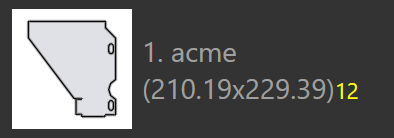

Modes d'imbrication
Le moteur d’imbrication dans TecZone Laser peut composer des agencements efficacement à partir d’une tâche d’imbrication. Vous pouvez également prendre n’importe quelle répartition de l’imbrication (ou même commencer avec une tôle au format brut) et y ajouter des pièces de manière interactive, les déplacer et les faire pivoter.
Imbrication automatique
Au départ, vous ajoutez des tôles et des pièces dans une tâche d’imbrication. Lorsque vous passez ensuite à l’onglet Layouts, une imbrication est automatiquement effectuée. Par la suite, vous pouvez modifier la liste des pièces ou certains réglages, puis nous vous proposons plusieurs options pour ré-imbriquer les pièces avec différents réglages.
Ajout de pièces supplémentaires à une tôle
Supposons que vous ayez ajouté quelques pièces supplémentaires à la tâche d’imbrication et qu’elles n’aient pas encore été imbriquées. Pour utiliser le moteur d’imbrication afin de placer ces pièces sur la tôle, sélectionnez d’abord l’agencementlayout[1] que vous souhaitez utiliser (il s’agit souvent de la dernière tôle, qui n’est probablement que partiellement remplie). Ensuite, cliquez sur l’icône Nest dans la barre d’outils à gauche, puis sélectionnez Pack remaining sheet area automatically. [2]

Les pièces qui restent à imbriquer sont placées sur la zone restante de la tôle.Cette option ne modifie aucune des pièces déjà placées sur la tôles, elle est parfois utilisée pour imbriquer manuellement une pièce d’une tôle, puis demander au moteur d’imbrication de terminer le reste de l’imbrication. L’image ci-dessous montre les nouvelles pièces ajoutées en jaune, et vous pouvez voir que les anciennes pièces n’ont pas été déplacées :

Réordonner - tôle entamée
Si vous n’avez pas besoin de conserver les positions des anciennes pièces, vous pouvez obtenir de meilleurs résultats en demandant au moteur d’imbrication de réordonner l’ensemble de la tôle. Choisissez Rearrange to create a remainder sheet et TecZone Laser réordonnera toutes les pièces de la tôle, en essayant d’obtenir une tôle entamée rectangulaire propre à droite, qui pourra être utilisée comme matière brute pour une future imbrication.

On constate que la tôle ci-dessus comporte les mêmes pièces que précédemment, mais qu’elles sont plus compactes, ce qui permet de découper une tôle entamée pour l’utiliser.
Réordonner - utiliser une tôle entière
Si la tôle entamée est trop petite pour être exploitée, il est utile de demander au moteur d’imbrication de réordonner la tôle de manière un peu plus espacée, en conservant toutes les pièces sur la tôle, mais en augmentant l’espacement entre les pièces afin d’utiliser toute la surface de la tôle. Cela peut être fait en choisissant Rearrange to use full sheet dans le menu :

Imbrication manuelle
Ouvrez un agencement à modifier à partir de l’onglet Agencements du panneau des tâches ou en ouvrant un fichier .fxlyt que vous avez enregistré précédemment.
Ajout de pièces
Vous pouvez ajouter des pièces à l’agencement en cliquant sur le bouton Ajouter dans la barre d’outils de gauche. Une liste de toutes les pièces de la tâche d’imbrication est affichée :

En cliquant sur une pièce dans la liste, celle-ci est ajoutée à la tôle (le moteur d’imbrication est utilisé pour trouver la position optimale de la pièce, mais vous pouvez la modifier ultérieurement). Les légendes des pièces utilisent différentes couleurs pour différentes significations comme indiqué ci-dessous :
 |
12 pièces imbriquées (quantité requise) |
|
2 pièces imbriquées en moins par rapport au nombre requis |
|
18 pièces requises, 20 imbriquées (+2) |
|
Nombre théorique de 24 pièces imbriquées |


Lorsque vous déplacez la souris sur la liste de pièces, TecZone Laser calcule immédiatement un emplacement approprié pour la pièce et l’insère provisoirement dans la tôle en bleu, afin que vous puissiez juger si elle convient. Vous pouvez donc placer rapidement plusieurs pièces sur la tôle en les déplaçant simplement avec la souris et en cliquant dessus.

| Une fois les pièces positionnées sur la tôle, elles peuvent être déplacées, pivotées ou reproduites à l’aide du panneau Placement. |